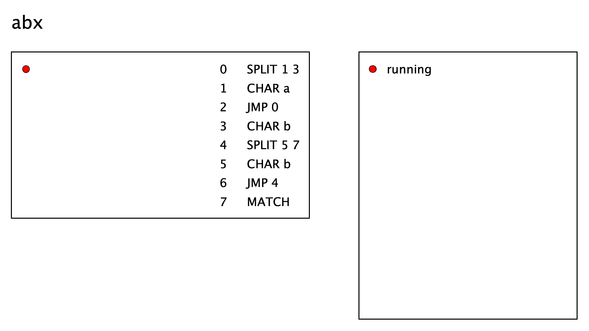
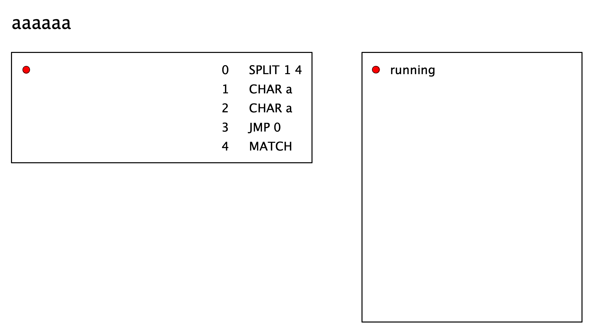
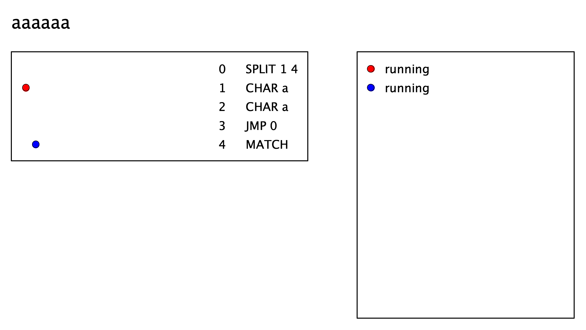
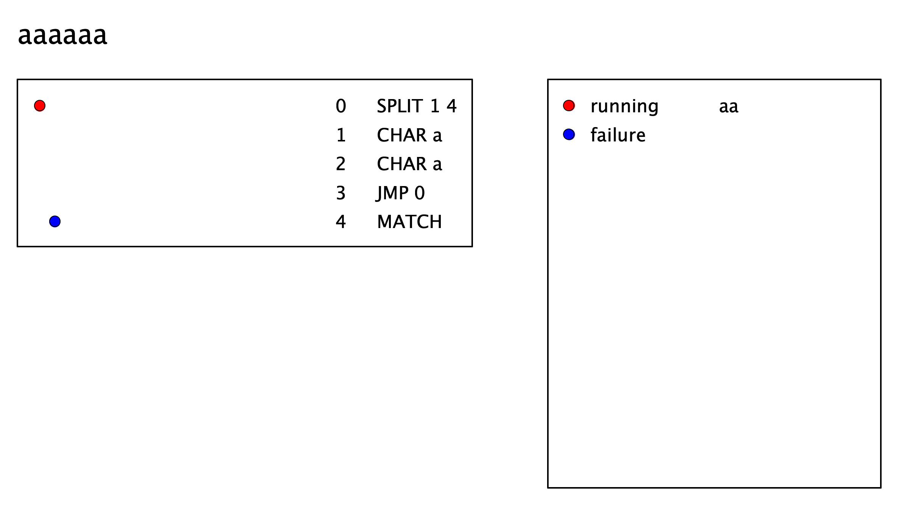
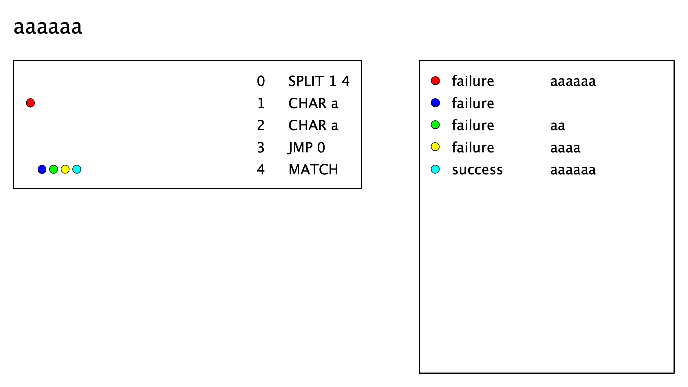

Regex Machine Language
| (require regex-vm) | package: regex-vm |
1 Programs and Instructions
procedure
inst : instruction?
> (program (char-instruction #\a) (char-instruction #\b) (split-instruction 3 5) (char-instruction #\x) match-instruction (char-instruction #\y) match-instruction)
(program
(char-instruction #\a)
(char-instruction #\b)
(split-instruction 3 5)
(char-instruction #\x)
#<match-instruction>
(char-instruction #\y)
#<match-instruction>)
value
> example-program
(program
(split-instruction 1 3)
(char-instruction #\a)
(jmp-instruction 0)
(char-instruction #\b)
(split-instruction 5 7)
(char-instruction #\b)
(jmp-instruction 4)
#<match-instruction>)
procedure
(program-instructions prog) → (listof instruction?)
prog : program?
> (program-instructions (program (char-instruction #\a) (char-instruction #\b) (char-instruction #\c))) (list (char-instruction #\a) (char-instruction #\b) (char-instruction #\c))
> (program-instructions example-program)
(list
(split-instruction 1 3)
(char-instruction #\a)
(jmp-instruction 0)
(char-instruction #\b)
(split-instruction 5 7)
(char-instruction #\b)
(jmp-instruction 4)
#<match-instruction>)
procedure
(instruction? v) → boolean?
v : any/c
1.1 CHAR instructions
procedure
(char-instruction? v) → boolean?
v : any/c
procedure
(char-instruction char) → char-instruction?
char : char?
> (char-instruction #\b) (char-instruction #\b)
procedure
(char-instruction-unwrap inst) → char?
inst : char-instruction?
> (char-instruction-unwrap (char-instruction #\z)) #\z
1.2 MATCH instructions
procedure
(match-instruction? v) → boolean?
v : any/c
1.3 JMP instructions
procedure
(jmp-instruction? v) → boolean?
v : any/c
procedure
(jmp-instruction target) → jmp-instruction?
target : natural?
> (jmp-instruction 4) (jmp-instruction 4)
procedure
(jmp-instruction-target inst) → natural?
inst : jmp-instruction?
> (define example-jmp (jmp-instruction 42)) > (jmp-instruction-target example-jmp) 42
1.4 SPLIT instructions
procedure
(split-instruction? v) → boolean?
v : any/c
procedure
(split-instruction target fork-target) → split-instruction?
target : natural? fork-target : natural?
> (split-instruction 2 5) (split-instruction 2 5)
procedure
(split-instruction-target inst) → natural?
inst : split-instruction?
procedure
(split-instruction-fork-target inst) → natural?
inst : split-instruction?
> (define example-split (split-instruction 42 17)) > (split-instruction-target example-split) 42
> (split-instruction-fork-target example-split) 17
2 Regex Virtual Machine
> (vm example-program "abx") 
procedure
(vm-program machine) → program?
machine : vm?
> (define example-vm (vm example-program "ab")) > (vm-program example-vm)
(program
(split-instruction 1 3)
(char-instruction #\a)
(jmp-instruction 0)
(char-instruction #\b)
(split-instruction 5 7)
(char-instruction #\b)
(jmp-instruction 4)
#<match-instruction>)
> (define example-vm (vm example-program "ab")) > (vm-input example-vm) "ab"
procedure
(vm-status machine)
→ (or/c 'not-finished 'matching-success 'matching-failure) machine : vm?
not finished —
the VM has not finished running the program. matching success – the VM successfully matched the input string with the program.
matching failure —
the VM determined that the input string does not match the program.
> (define multiple-as-then-one-b (program (split-instruction 1 3) (char-instruction #\a) (jmp-instruction 0) (char-instruction #\b) match-instruction))
> (define aab-vm (vm multiple-as-then-one-b "aab")) > (vm-status aab-vm) 'running
> (vm-status (vm-run aab-vm #:steps 2)) 'running
> (vm-status (vm-run aab-vm #:steps 10)) 'success
Note that virtual machines are immutable, so this function returns a new machine that is distinct from machine.
> (define even-number-of-as (program (split-instruction 1 4) (char-instruction #\a) (char-instruction #\a) (jmp-instruction 0) match-instruction)) > (define aaaaaa-vm (vm even-number-of-as "aaaaaa")) > aaaaaa-vm 
> (vm-run aaaaaa-vm #:steps 1) 
> (vm-run aaaaaa-vm #:steps 4) 
> (vm-run aaaaaa-vm #:steps 20) 
2.1 Regex VM Threads
procedure
(vm-thread? v) → boolean?
v : any/c
procedure
(vm-threads machine) → (listof vm-thread?)
machine : vm?
> (define all-as-or-all-bs (program (split-instruction 1 4) (split-instruction 2 7) (char-instruction #\a) (jmp-instruction 1) (split-instruction 5 7) (char-instruction #\b) (jmp-instruction 4) match-instruction)) > (define aaaa-vm (vm all-as-or-all-bs "aaaa")) > (vm-threads aaaa-vm) (list (vm-thread 'running 0 0))
> (vm-threads (vm-run aaaa-vm #:steps 1)) (list (vm-thread 'running 1 0) (vm-thread 'running 4 0))
> (vm-threads (vm-run aaaa-vm #:steps 2))
(list
(vm-thread 'running 2 0)
(vm-thread 'running 5 0)
(vm-thread 'running 7 0)
(vm-thread 'running 7 0))
procedure
(vm-thread-program-counter thd) → natural?
thd : vm-thread?
procedure
(vm-thread-character-counter thd) → natural?
thd : vm-thread?
Note that threads must accept characters from the input string in left-to-right order and cannot skip characters, so the exact prefix accepted by the thread can be reconstructed given its character counter and the original input string.